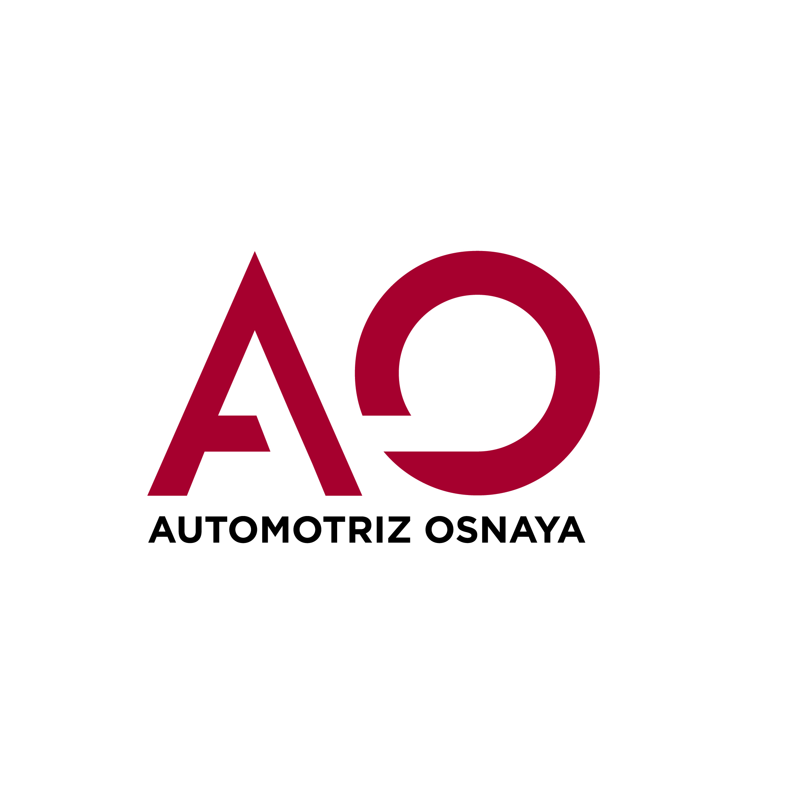

<nav
  class="
    navbar navbar-nav
    sticky-top
    navbar-expand-lg navbar-dark
    bg-primary
    overlay
  "
>
  <div class="container-fluid">
    <a class="navbar-brand">
      
    </a>
    <span class="navbar-brand mb-0 h1">Automotriz Osnaya</span>
    <button
      class="navbar-toggler"
      type="button"
      data-bs-toggle="collapse"
      data-bs-target="#navbarSupportedContent"
      aria-controls="navbarSupportedContent"
      aria-expanded="false"
      aria-label="Toggle navigation"
    >
      <span class="navbar-toggler-icon"></span>
    </button>
    <div class="collapse navbar-collapse" id="navbarSupportedContent">
      <ul class="navbar-nav ms-auto mb-2 mb-lg-0 me-1">
        <li class="nav-item dropdown">
          <a
            class="nav-link dropdown-toggle"
            href="#"
            id="navbarDropdown"
            role="button"
            data-bs-toggle="dropdown"
            aria-expanded="false"
          >
            Alberto Osnaya
          </a>
          <ul class="dropdown-menu" aria-labelledby="navbarDropdown">
            <li><a class="dropdown-item" href="#">Mi perfil</a></li>
            <li><hr class="dropdown-divider" /></li>
            <li><a class="dropdown-item" href="#">Cerrar sesión</a></li>
          </ul>
        </li>
      </ul>
    </div>
  </div>
</nav>
